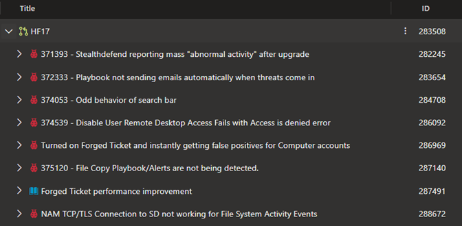
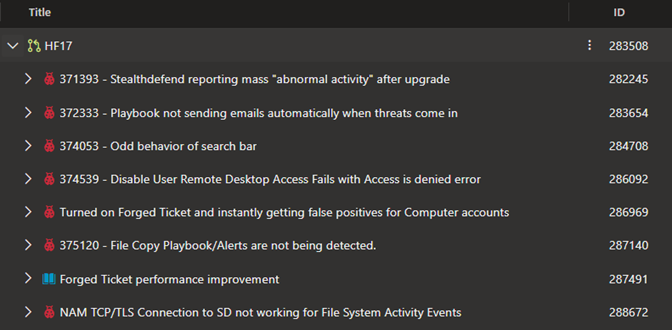

Summary:
In this hotfix we addressed various issues relating to StealthDEFEND 2.7 SP1:
Greg Connors
Affected Versions:
Prior versions of 2.7 SP1
Dev Tickets:

Resolved in Version 2.7.1865
https://downloads.stealthbits.com/access/files/SDHotfixes/StealthDEFEND_2.7.1865.zip
In this hotfix we addressed various issues relating to StealthDEFEND 2.7 SP1:
- Added performance improvements to the forged ticket threat
- Threat response improvements
Greg Connors
Affected Versions:
Prior versions of 2.7 SP1
Dev Tickets:

Resolved in Version 2.7.1865
https://downloads.stealthbits.com/access/files/SDHotfixes/StealthDEFEND_2.7.1865.zip